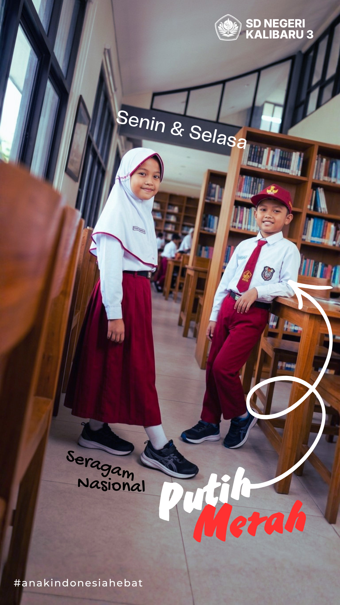
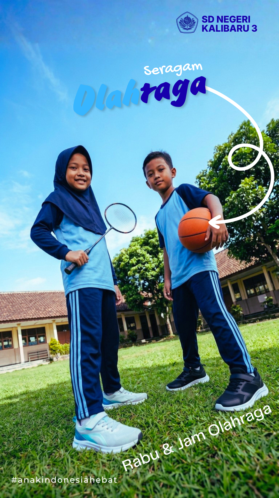
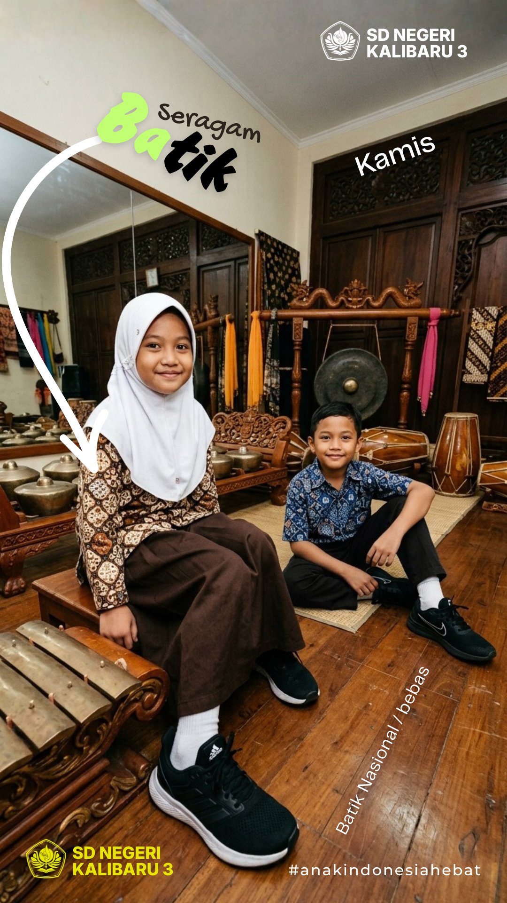
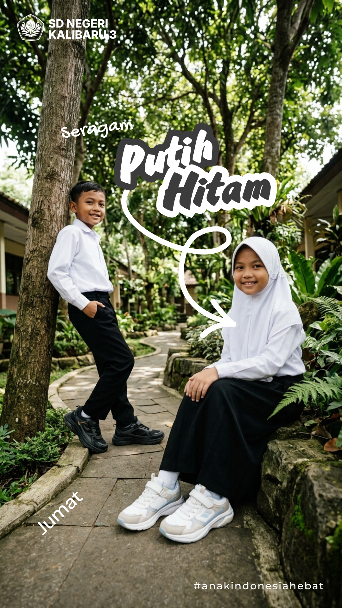

Informasi Sekolah
Informasi SDN Kalibaru 3 Depok
Pusat informasi pengumuman, agenda dan kegiatan, dokumen, serta galeri kegiatan sekolah.
Pengumuman
Pengumuman sekolah
Informasi penting dan pengumuman terbaru dari sekolah.
Memuat pengumuman...
Agenda & Kegiatan
Agenda dan kegiatan sekolah
Jadwal kegiatan sekolah yang telah dipublikasikan.
Memuat agenda...
Dokumen & Unduhan
Dokumen sekolah
Dokumen yang tersedia untuk diakses atau diunduh.
Memuat dokumen...
Galeri
Galeri kegiatan sekolah
Dokumentasi kegiatan sekolah yang telah dipublikasikan. Pilih album untuk melihat seluruh foto kegiatan.
Memuat galeri...
Seragam Sekolah
Seragam sekolah




SDN Kalibaru 3 Depok
Informasi sekolah dalam satu tempat
Ikuti pengumuman, agenda, dokumen, dan kegiatan sekolah melalui halaman informasi resmi ini.